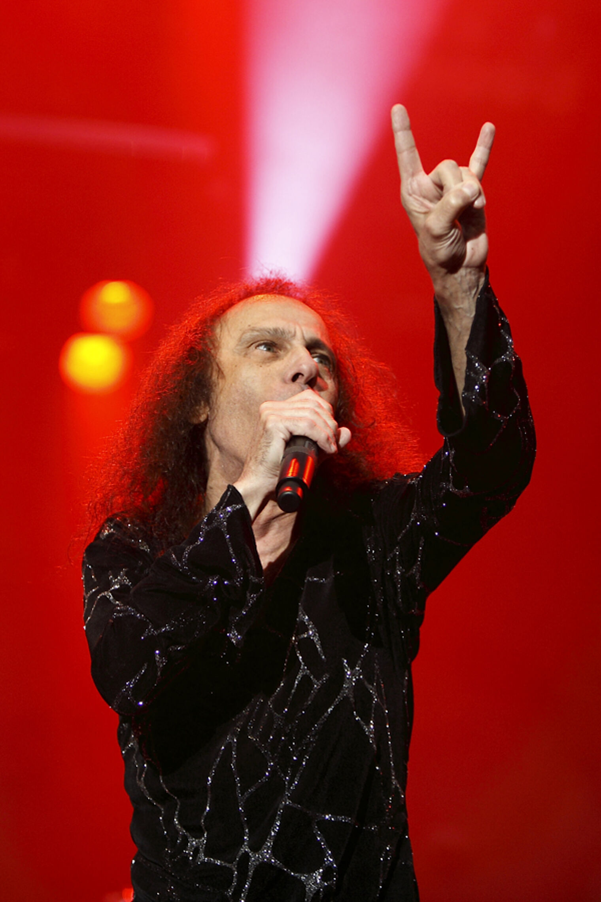

This guide is meant to for those are who curious about or new to opera. I'm a Gen-Xer who was a metalhead during his teenage years and is now an avid fan of opera.
A couple of things to keep in mind:
Opera is an experience. There are many kinds of operas; humorous operas, sad operas, tragic operas, and epic operas. Opera is over 400 years old. So there are operas and composers for everyone. Just because you like opera from one era does not mean you will like opera from another era or by a particular composer. There are opera fans who can't stand Baroque opera. There are opera fans who hate Richard Wagner. All of that is okay. Opera is for everyone. But not every opera or composer appeals to everyone.
I want people to enjoy opera. No matter the language. It's a beautiful, passionate, exhilarating art form. Read on!
As you browse the site, if you have any questions or a suggestion for a topic for me to write about, see the Suggestions page.
For more about me, go here